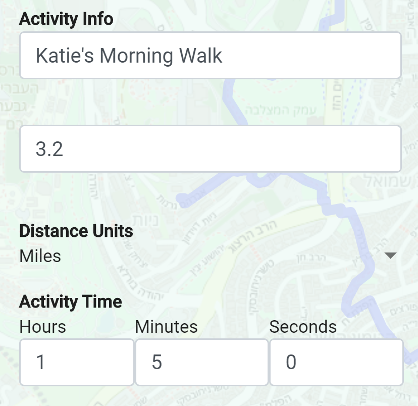

<!-- <h2 mat-dialog-title>Welcome to Race Day!</h2>
<mat-dialog-content class="mat-typography">
  
<mat-horizontal-stepper [linear]="!isLinear" #stepper>
  <mat-step [stepControl]="firstFormGroup">
    <form [formGroup]="firstFormGroup">
      <ng-template matStepLabel>Upload picture</ng-template>
      <b> Upload a profile picture </b> so family and friend can see you on the map
      <div>
        <button mat-button matStepperNext>Next</button>
      </div>
    </form>
  </mat-step>

  <mat-step [stepControl]="thirdFormGroup">
    <form [formGroup]="thirdFormGroup">
      <ng-template matStepLabel>Race Knowledge</ng-template>
      <b> Know how you're going to enter your fitness activities</b> <br>
      We recommend using Strava because it will track your exercise and automatically integrate with our platform. Click through the two options for more information. You can use one or both!

      <mat-accordion>
  <mat-expansion-panel>
    <mat-expansion-panel-header>
      <mat-panel-title>
        Option 1: Manual Entry
      </mat-panel-title>
      <mat-panel-description>
      </mat-panel-description>
 
     
    </mat-expansion-panel-header>

     
      
      

  </mat-expansion-panel>
  <mat-expansion-panel>
    <mat-expansion-panel-header>
      <mat-panel-title>
        Option 2: Use Strava
      </mat-panel-title>
      <mat-panel-description>
      </mat-panel-description>
    </mat-expansion-panel-header>
  </mat-expansion-panel>
</mat-accordion>


      <div>
        <button mat-button matStepperPrevious>Back</button>
        <button mat-button matStepperNext>Next</button>
      </div>
    </form>
  </mat-step>

  <mat-step>
    <ng-template matStepLabel>Go to map!</ng-template>
    <p>You are now done.</p>
    <div>
      <button mat-button matStepperPrevious>Back</button>
      <button mat-button (click)="stepper.reset()">Reset</button>
    </div>
  </mat-step>
</mat-horizontal-stepper>


</mat-dialog-content>
<mat-dialog-actions align="end">
  <button mat-button mat-dialog-close>Close</button>
</mat-dialog-actions> -->